Introduction to Spatial Data
GEO 200CN - Quantitative Geography
Professor Noli Brazil
April 18, 2022
This week you will learn how to process and map spatial data in R. The three major packages for processing spatial data in R are sp, sf and raster. This guide will provide an introduction to these packages, with a heavier focus on the sf package. To motivate the use of these packages, the bulk of the guide will focus on how to map data, which will help you answer the mapping questions in this week’s assignment.
Installing and loading packages
Install sp, sf, raster if you have not already done so.
install.packages(c("sf", "raster", "sp"))We will also be using the packages tmap, RColorBrewer, rgdal, and cartogram in this lab.
install.packages(c("tmap", "RColorBrewer", "rgdal", "cartogram"))Load all of these packages using library(). We’ll also be using the package tidyverse, so load it up as well. Remember, you always need to use library() at the top of your R Markdown files.
library(sf)
library(sp)
library(raster)
library(tmap)
library(tidyverse)
library(RColorBrewer)
library(cartogram)Spatial Data
Spatial phenomena can generally be thought of as either discrete objects with clear boundaries or as a continuous phenomenon that can be observed everywhere, but does not have natural boundaries. Discrete spatial objects may refer to a river, road, country, town, or a research site. Examples of continuous phenomena, or “spatial fields”, include elevation, temperature, and air quality.
Spatial objects are usually represented by vector data. Such data consists of a description of the “geometry” or “shape” of the objects, and normally also includes additional variables. For example, a vector data set may describe the borders of the countries of the world (geometry), and also store their names and the size of their population; or the geometry of the roads in an area, as well as their type and names. These additional variables are often referred to as “attributes”. Continuous spatial data (fields) are usually represented with a raster data structure. We discuss these two data types in turn.
Vector data
The main vector data types are points, lines and polygons. In all cases, the geometry of these data structures consists of sets of coordinate pairs (x, y). Points are the simplest case. Each point has one coordinate pair, and n associated variables. For example, a point might represent a place where a rat was trapped, and the attributes could include the date it was captured, the person who captured it, the species size and sex, and information about the habitat. It is also possible to combine several points into a multi-point structure, with a single attribute record. For example, all the coffee shops in a town could be considered as a single geometry.
The geometry of lines is a just a little bit more complex. First note that in this context, the term ‘line’ refers to a set of one or more polylines (connected series of line segments). For example, in spatial analysis, a river and all its tributaries could be considered as a single ‘line’ (but they could also also be several lines, perhaps one for each tributary river). Lines are represented as ordered sets of coordinates (nodes). The actual line segments can be computed (and drawn on a map) by connecting the points. Thus, the representation of a line is very similar to that of a multi-point structure. The main difference is that the ordering of the points is important, because we need to know which points should be connected. A network (e.g. a road or river network), or spatial graph, is a special type of lines geometry where there is additional information about things like flow, connectivity, direction, and distance.
A polygon refers to a set of closed polylines. The geometry is very similar to that of lines, but to close a polygon the last coordinate pair coincides with the first pair. Multiple polygons can be considered as a single geometry. For example, the Philippines consists of many islands. Each island can be represented by a single polygon, but together they can be represented as a single (multi-) polygon representing the entire country.
We will be primarily focusing on vector data in the next several weeks. We will return to raster data when we learn about spatial interpolation later in the quarter.
The traditional way of handling vector data in R is to use the sp package. sp has been around since 2005, and thus has a rich ecosystem of tools built on top of it. sf is newer (first released in 2016) so it doesn’t have such a rich ecosystem. However, it’s much easier to use and fits in very naturally with the tidyverse. Which means we can use most of the functions we went through when we learned about the tidyverse package to clean and process sf spatial objects. The sp package uses a rather complex data structure, which can make it challenging to use.
The trend is gradually shifting towards the use of sf as the primary spatial package. For this reason and because it adheres to tidy principles, I prefer sf over sp. But because it is relatively new, sf is not wholly compatible with all of R’s spatial functions, particularly those that perform spatial data analysis, including raster analysis (although this is changing). In contrast, sp is compatible with most spatial functions.
In this class, we will lean heavily on the sf package when dealing with vector spatial data, but use sp when convenient or needed.
sp package
The sp package defines a set of classes to represent spatial data. A class defines a particular data type. The data.frame is an example of a class. Any particular data.frame you create is an object (instantiation) of that class.
The main reason for defining classes is to create a standard representation of a particular data type to make it easier to write functions (also known as ‘methods’) for them. In fact, the sp package does not provide many functions to modify or analyze spatial data; but the classes it defines are used in more than 100 other R packages that provide specific functionality.
sp introduces a number of classes with names that start with Spatial. For vector data, the basic types are the SpatialPoints, SpatialLines, and SpatialPolygons. These classes only represent geometries. To also store variables, classes are available with these names plus DataFrame, for example, SpatialPolygonsDataFrame and SpatialPointsDataFrame. When referring to any object with a name that starts with Spatial, it is common to write Spatial*. When referring to a SpatialPolygons or SpatialPolygonsDataFrame object it is common to write SpatialPolygons*. Don’t worry too much about these details. If you are interested, the Spatial classes (and their use) are described in detail by Bivand, Pebesma and Gómez-Rubio.
To demonstrate how vector data are generally depicted in sp, let’s bring in the polygon shapefile lux, which is a shapefile of Luxembourg and is a part of the raster package. The shapefile is the most commonly used file format for vector data. Use the following code to to get the full path name of the file’s location. We need to do this as the location of this file depends on where the raster package is installed. You should not use the system.file() function for your own files. In other words, don’t dwell too much on what this function is doing. It only serves for creating examples with data that ships with R.
filename <- system.file("external/lux.shp", package="raster")
filename## [1] "/Library/Frameworks/R.framework/Versions/4.1/Resources/library/raster/external/lux.shp"Now we have the filename we need to use for the shapefile() function. This function comes with the raster package. For it to work you must also have the rgdal package, which we loaded in earlier.
lux <- shapefile(filename)The shapefile() function returns Spatial*DataFrame objects. In this case a SpatialPolygonsDataFrame. We can use the basic plot() function to make a map.
plot(lux)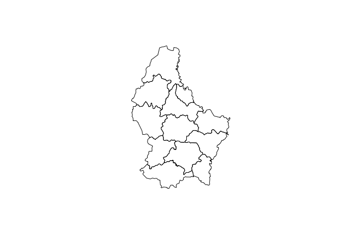
We mapped the polygons above, but we can also map one of the attributes. We can do this by using the function spplot(). Here we show a choropleth map of the area of each region AREA.
spplot(lux, 'AREA')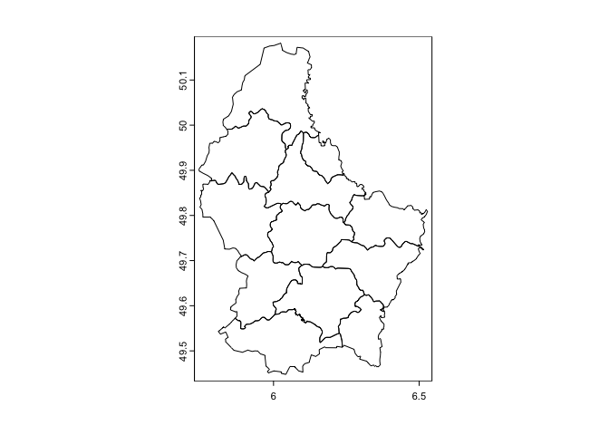
We can manipulate the SpatialPolygonsDatarFrame like we would a regular data frame. Here we’ll use base R to manipulate. To extract the attributes (data.frame) from a Spatial object, use:
d <- as.data.frame(lux)
head(d)## ID_1 NAME_1 ID_2 NAME_2 AREA
## 0 1 Diekirch 1 Clervaux 312
## 1 1 Diekirch 2 Diekirch 218
## 2 1 Diekirch 3 Redange 259
## 3 1 Diekirch 4 Vianden 76
## 4 1 Diekirch 5 Wiltz 263
## 5 2 Grevenmacher 6 Echternach 188You can extract a variable
lux$NAME_2## [1] "Clervaux" "Diekirch" "Redange" "Vianden"
## [5] "Wiltz" "Echternach" "Remich" "Grevenmacher"
## [9] "Capellen" "Esch-sur-Alzette" "Luxembourg" "Mersch"Create a new variable, for example a new variable containing AREA multiplied by 100
lux$AREA_100 <- lux$AREA*100Now, sub-setting by variable.
lux[, 'NAME_2']## class : SpatialPolygonsDataFrame
## features : 12
## extent : 5.74414, 6.528252, 49.44781, 50.18162 (xmin, xmax, ymin, ymax)
## crs : +proj=longlat +datum=WGS84 +no_defs
## variables : 1
## names : NAME_2
## min values : Capellen
## max values : WiltzNote how this code is different from the code above it. Above lux$NAME_2 returns a vector of values is returned. With the approach directly above you get a new SpatialPolygonsDataFrame with only one variable.
Selecting rows (records).
g <- lux[lux$NAME_1 == 'Grevenmacher',]
plot(g)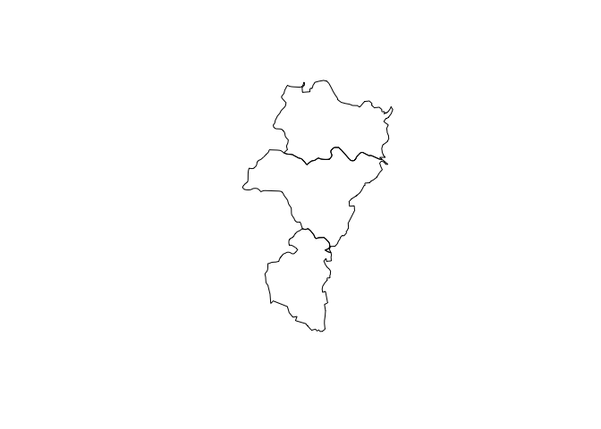
There are other sp spatial data functions you can use to manipulate the polygons. Since we won’t be focusing on sp in this class, you can learn more about these functions on your own here.
sf package
The sf package is the other major package for handling vector data in R. It conceives of spatial objects as simple features. What is a feature? A feature is thought of as a thing, or an object in the real world, such as a building or a tree. A county can be a feature. As can a city and a neighborhood. Features have a geometry describing where on Earth the features are located, and they have attributes, which describe other properties. The main application of simple feature geometries is to describe two-dimensional geometries by points, lines, or polygons.
Reading spatial data
The function for reading in spatial data into R as an sf object is st_read(). I zipped up and uploaded onto GitHub a folder containing files for this lab. Set your working directory to an appropriate folder and use the following code to download and unzip the file.
#insert the pathway to the folder you want your data stored into
setwd("insert your pathway here")
#downloads file into your working directory
download.file(url = "https://raw.githubusercontent.com/geo200cn/data/master/spatialsflab.zip", destfile = "spatialsflab.zip")
#unzips the zipped file
unzip(zipfile = "spatialsflab.zip")The data are also located on Canvas in the Labs and Assignments Week 4 folder.
You should see the shapefiles saccityinc.shp, Rivers.shp, Parks.shp, and EV_Chargers.shp in the folder you specified in setwd(). These files contain Sacramento city Census tract polygons, Sacramento river polylines, Sacramento parks polygons, and Sacramento Electric Vehicle Charging Locations points, respectively. You should also see a csv file sacrace.csv, which contains Sacramento city Census tract race/ethnic population counts. First, bring in the shapefiles using the function st_read().
saccitytracts <- st_read("saccityinc.shp", stringsAsFactors = FALSE)
parks <- st_read("Parks.shp", stringsAsFactors = FALSE)
rivers <- st_read("Rivers.shp", stringsAsFactors = FALSE)
evcharge <- st_read("EV_Chargers.shp", stringsAsFactors = FALSE)The argument stringsAsFactors = FALSE tells R to keep any variables that look like a character as a character and not a factor. Look at saccitytracts
saccitytracts## Simple feature collection with 122 features and 2 fields
## Geometry type: MULTIPOLYGON
## Dimension: XY
## Bounding box: xmin: -121.5601 ymin: 38.43789 xmax: -121.3627 ymax: 38.6856
## Geodetic CRS: NAD83
## First 10 features:
## GEOID medinc geometry
## 1 6067007104 High MULTIPOLYGON (((-121.5076 3...
## 2 6067000400 High MULTIPOLYGON (((-121.4748 3...
## 3 6067006900 Low MULTIPOLYGON (((-121.4729 3...
## 4 6067003102 Medium MULTIPOLYGON (((-121.4457 3...
## 5 6067006400 Low MULTIPOLYGON (((-121.4291 3...
## 6 6067001101 Low MULTIPOLYGON (((-121.4989 3...
## 7 6067009633 Medium MULTIPOLYGON (((-121.4476 3...
## 8 6067001900 Medium MULTIPOLYGON (((-121.4824 3...
## 9 6067009614 High MULTIPOLYGON (((-121.4447 3...
## 10 6067004906 Medium MULTIPOLYGON (((-121.4531 3...The output gives us pertinent information regarding the spatial file, including the type (MULTIPOLYGON), the extent or bounding box, the coordinate reference system, and the 4 variables. Click on saccitytracts in your environment window. You’ll find that a window pops up in the top left portion of your interface. Unlike with sp objects, an sf object looks and feels like a regular data frame. The only difference is there is a geometry column. This column “spatializes” the dataset, or lets R know where each feature is geographically located on the Earth’s surface.
You can bring in other types of spatial data files other than shapefiles. See a list of these file types here.
Next bring in sacrace.csv which contains Hispanic (hisp), non-Hispanic Asian (nhasn), non-Hispanic Black (nhblk), non-Hispanic white (nhwhite) and total population (tpopr) for tracts in Sacramento city. Use the function read_csv().
sacrace <- read_csv("sacrace.csv")Data manipulation
sf objects are data frames. This means that they are tidy friendly. You can use many of the functions we learned previously to manipulate sf objects, and this includes our new best friend the pipe %>% operator. For example, let’s do the following tasks on saccitytracts.
- Merge in the race/ethnicity and total population variables from sacrace into saccitytracts using
left_join(). The common ID is GEOID - Create the variable pwh which is the percent of the tract population that is non-Hispanic white using
mutate() - Keep just the variables GEOID, medinc, and pwh using the function
select()
We do this in one line of continuous code using the pipe operator %>%
saccitytracts <- saccitytracts %>%
left_join(sacrace, by = "GEOID") %>%
mutate(pwh = nhwhite/tpopr) %>%
select(GEOID, medinc, pwh)You can also keep certain polygons (i.e. subset rows). For example, keep the tracts that are majority non-white
mwhite <- saccitytracts %>%
filter(pwh < 0.5)
#number of neighborhoods in Sacramento that are majority non white
nrow(mwhite)## [1] 94The main takeaway: sf objects are tidy friendly, so you can use many of the tidy functions on these objects to manipulate your data set.
While tidyverse offers a set of functions for data manipulation, the sf package offers a suite of functions unique to manipulating spatial data. Spatial data manipulation involves cleaning or altering your data set based on the geographic location of features. Most of these functions start out with the prefix st_. To see all of the functions, type in
methods(class = "sf")We won’t go through these functions as the list is quite extensive. You can learn about them in Lovelace et al’s excellent guide. The focus of this lab is to learn how to map sf objects, which we’ll get to later in this guide.
Raster Data
Raster data is commonly used to represent spatially continuous phenomena such as elevation. A raster divides the world into a grid of equally sized rectangles (referred to as cells or, in the context of satellite remote sensing, pixels) that all have one or more values (or missing values) for the variables of interest. A raster cell value should normally represent the average (or majority) value for the area it covers. However, in some cases the values are actually estimates for the center of the cell (in essence becoming a regular set of points with an attribute).
In contrast to vector data, in raster data the geometry is not explicitly stored as coordinates. It is implicitly set by knowing the spatial extent and the number of rows and columns in which the area is divided. From the extent and number of rows and columns, the size of the raster cells (spatial resolution) can be computed. While raster cells can be thought of as a set of regular polygons, it would be very inefficient to represent the data that way as coordinates for each cell would have to be stored explicitly. It would also dramatically increase processing speed in most cases.
The main package for handling raster data in R is raster. The raster package has functions for creating, reading, manipulating, and writing raster data. It is built around a number of classes of which the RasterLayer, RasterBrick, and RasterStack classes are the most important. When discussing methods that can operate on all three of these objects, they are referred to as Raster* objects.
The package provides, among other things, general raster data manipulation functions that can easily be used to develop more specific functions. For example, there are functions to read a chunk of raster values from a file or to convert cell numbers to coordinates and back. The package also implements raster algebra and many other functions for raster data manipulation.
A RasterLayer object represents single-layer (variable) raster data. A RasterLayer object always stores a number of fundamental parameters that describe it. These include the number of columns and rows, the spatial extent, and the Coordinate Reference System (CRS). In addition, a RasterLayer can store information about the file in which the raster cell values are stored (if there is such a file). A RasterLayer can also hold the raster cell values in memory.
Sometimes you will bring in a raster dataset directly from a file. To do that, you use the the raster() function. Here is an example using the ‘Meuse’ dataset (taken from the raster package), using a file in the native ‘raster-file’ format. Use the following code to bring in the data.
filename <- system.file("external/test.grd", package="raster")
r1 <- raster(filename)
r1## class : RasterLayer
## dimensions : 115, 80, 9200 (nrow, ncol, ncell)
## resolution : 40, 40 (x, y)
## extent : 178400, 181600, 329400, 334000 (xmin, xmax, ymin, ymax)
## crs : +proj=sterea +lat_0=52.1561605555556 +lon_0=5.38763888888889 +k=0.9999079 +x_0=155000 +y_0=463000 +datum=WGS84 +units=m +no_defs
## source : test.grd
## names : test
## values : 138.7071, 1736.058 (min, max)We see that this data is a RasterLayer. Remember that raster data are basically grid data, and the grid we have contains 115 rows, 80 cells, and 9200 (115 x 80) cells. Let’s plot what we got (it rhymes!)
plot(r1)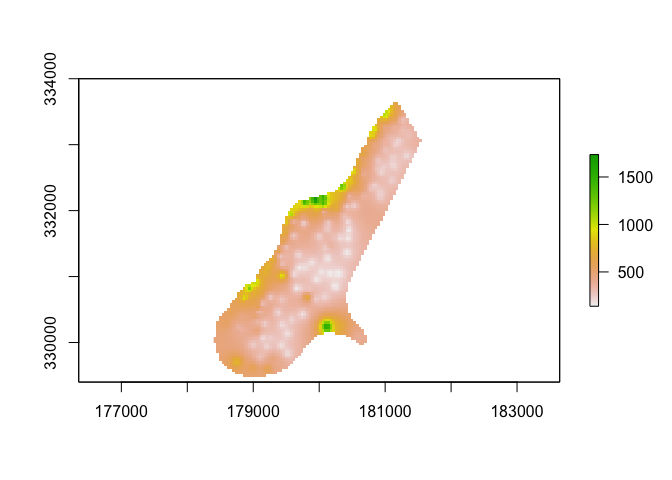
Rather than bringing in a raster dataset, you often have to convert a vector object, typically polygons or points, into a raster. Polygon to raster conversion is typically done to create a RasterLayer that can act as a mask, i.e. to set to NA a set of cells of a raster object, or to summarize values on a raster by zone. For example a country polygon is transferred to a raster that is then used to set all the cells outside that country to NA; whereas polygons representing administrative regions such as states can be transferred to a raster to summarize raster values by region.
Let’s turn the Luxembourg polygon lux we used earlier into a raster by using the function raster(). The size of each pixel defines the resolution or res of the new raster.
r <- raster(lux, res=0.01 )
r## class : RasterLayer
## dimensions : 73, 78, 5694 (nrow, ncol, ncell)
## resolution : 0.01, 0.01 (x, y)
## extent : 5.74414, 6.52414, 49.45162, 50.18162 (xmin, xmax, ymin, ymax)
## crs : +proj=longlat +datum=WGS84 +no_defsIf you try to plot the raster you get an error.
plot(r)## Error in .plotraster2(x, col = col, maxpixels = maxpixels, add = add, : no values associated with this RasterLayerObject r only has the skeleton of a raster data set. That is, it knows about its location, resolution, etc., but there are no values associated with it. The function rasterize()transfers values associated with ‘object’ type spatial data (points, lines, polygons) to raster cells. Let’s transfer the area AREA from lux to their associated raster cell.
vr <- rasterize(lux, r, 'AREA')
plot(vr)
Notice the difference between how this map “looks” compared to the vector data mapped earlier. Why is there a difference?
Similar to vector data, you can manipulate raster data, such assign values to cells, add two rasters, and so on. We won’t go into too much of this until later in the class when we go through spatial interpolation, but you can learn more about these functions here.
It is quite common to analyze raster data using single-layer objects. However, in many cases multi-variable raster data sets are used. The raster package has two classes for multi-layer data the RasterStack and the RasterBrick. The principal difference between these two classes is that a RasterBrick can only be linked to a single (multi-layer) file. In contrast, a RasterStack can be formed from separate files and/or from a few layers (‘bands’) from a single file. We won’t be using RasterStack and RasterBrick too much in this class. You can learn more about them on your own here.
We will be revisiting raster data later in the class when we get into spatial prediction.
Mapping
Now that you’ve learned the basics of bringing in and manipulating spatial data, let’s go through how we can map it. We already did some mapping above, but let’s go through the set of map types discussed in OSU Ch. 3 and lecture. We’ll focus entirely on mapping sf spatial objects. There are two ways of mapping sf objects: ggplot() from the ggplot2 package and tm_shape() from the tmap package.
ggplot
Because sf is tidy friendly, it is no surprise we can use the tidyverse plotting function ggplot() to make maps. We already received an introduction to ggplot() a few labs ago. Recall its basic structure:
ggplot(data = <DATA>) +
<GEOM_FUNCTION>(mapping = aes(x, y)) +
<OPTIONS>()In mapping, geom_sf() is <GEOM_FUNCTION>(). Unlike with functions like geom_histogram() and geom_boxplot(), we don’t specify an x and y axis. Instead you use fill if you want to map a variable or color to just map boundaries.
Let’s use ggplot() to make a choropleth map. Choropleth maps are discussed on page 73-76 in OSU. We need to specify a numeric variable in the fill = argument within geom_sf(). Here we map percent non-Hispanic white pwh.
ggplot(data = saccitytracts) +
geom_sf(aes(fill = pwh))
We can also specify a title (as well as subtitles and captions) using the labs() function.
ggplot(data = saccitytracts) +
geom_sf(aes(fill = pwh)) +
labs(title = "Percent white Sacramento City Tracts") 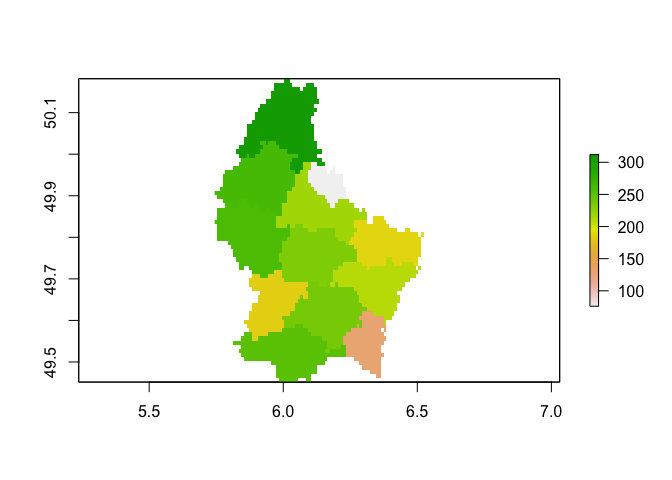
We can make further layout adjustments to the map. Don’t like a blue scale on the legend? You can change it using the scale_file_gradient() function. Let’s change it to a white to red gradient. We can also eliminate the gray tract border colors to make the fill color distinction clearer. We do this by specifying color = NA inside geom_sf(). We can also get rid of the gray background by specifying a basic black and white theme using theme_bw().
ggplot(data = saccitytracts) +
geom_sf(aes(fill = pwh), color = NA) +
scale_fill_gradient(low= "white", high = "red", na.value ="gray") +
labs(title = "Percent white Sacramento City Tracts",
caption = "Source: American Community Survey") +
theme_bw()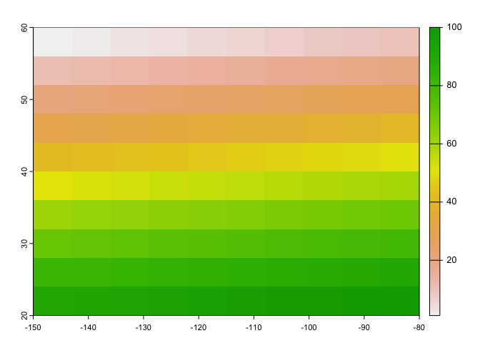
I also added a caption indicating the source of the data using the captions = parameter within labs().
You also use geom_sf() for mapping points (an example of a pin map as described in OSU page 66). Color them black using fill = "black". Let’s map the location of EV chargers in Sacramento.
ggplot(data = evcharge) +
geom_sf(fill = "black") +
labs(title = "EV Charge Stations Sacramento City Tracts",
caption = "Source: City of Sacramento") +
theme_bw()
You can overlay the points over Sacramento tracts to give the locations some perspective. Here, you add two geom_sf() for the tracts and the EV charge stations.
ggplot() +
geom_sf(data = saccitytracts) +
geom_sf(data = evcharge, fill = "black") +
labs(title = "EV Charge Stations Sacramento City Tracts",
caption = "Source: City of Sacramento") +
theme_bw()
Note that data = moves out of ggplot() and into geom_sf() because we are mapping more than one spatial feature.
What about a map of polylines? Here is a map of rivers intersecting with Sacramento City.
ggplot() +
geom_sf(data = rivers, col = "blue") +
labs(title = "Sacramento Rivers",
caption = "Source: Sacramento County") +
theme_bw()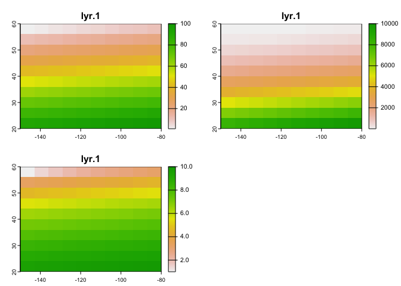
tmap
Whether one uses the tmap or ggplot is a matter of taste, but I find that tmap has some benefits, so let’s focus on its mapping functions next.
tmap uses the same layered logic as ggplot. The initial command istm_shape(), which specifies the geography to which the mapping is applied. This is followed by a number of tm_* options that select the type of map and several optional customizations. Check the full list of tm_ elements here.
Choropleth map
Let’s make a choropleth map of percent white in Sacramento.
tm_shape(saccitytracts) +
tm_polygons(col = "pwh", style = "quantile")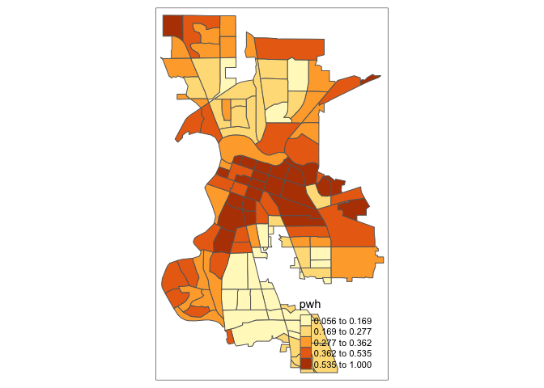
You first put the dataset saccitytracts inside tm_shape(). Because you are plotting polygons, you use tm_polygons() next. If you are plotting points, you will use tm_dots(). If you are plotting lines, you will use tm_lines(). The argument col = "pwh" tells R to shade the tracts by the variable pwh. The argument style = "quantile" tells R to break up the shading into quintiles, or equal groups of 5. I find that this is where tmap offers a distinct advantage over ggplot in that users have greater control over the legend and bin breaks. tmap allows users to specify algorithms to automatically create breaks with the style argument. OSU discusses the importance of breaks and classifications on page 75. You can also change the number of breaks by setting n=. The default is n=5. Rather than quintiles, you can show quartiles using n=4
tm_shape(saccitytracts) +
tm_polygons(col = "pwh", style = "quantile", n=4)
Check out this breakdown of the available classification styles in tmap.
You can overlay multiple features on one map. For example, we can add park polygons on top of city tracts, providing a visual association between parks and percent white. You will need to add two tm_shape() functions each for saccitytracts and parks.
tm_shape(saccitytracts) +
tm_polygons(col = "pwh", style = "quantile", n=4) +
tm_shape(parks) +
tm_polygons(col = "green")
The tm_polygons() command is a wrapper around two other functions, tm_fill() and tm_borders(). tm_fill() controls the contents of the polygons (color, classification, etc.), while tm_borders() does the same for the polygon outlines.
For example, using the same shape (but no variable), we obtain the outlines of the neighborhoods from the tm_borders() command.
tm_shape(saccitytracts) +
tm_borders()
Similarly, we obtain a choropleth map without the polygon outlines when we just use the tm_fill() command.
tm_shape(saccitytracts) +
tm_fill("pwh")
When we combine the two commands, we obtain the same map as with tm_polygons() (this illustrates how in R one can often obtain the same result in a number of different ways). Try this on your own.
Color Scheme
The argument palette = defines the color ranges associated with the bins and determined by the style arguments. Several built-in palettes are contained in tmap. For example, using palette = "Reds" would yield the following map for our example.
tm_shape(saccitytracts) +
tm_polygons(col = "pwh", style = "quantile",palette = "Reds") 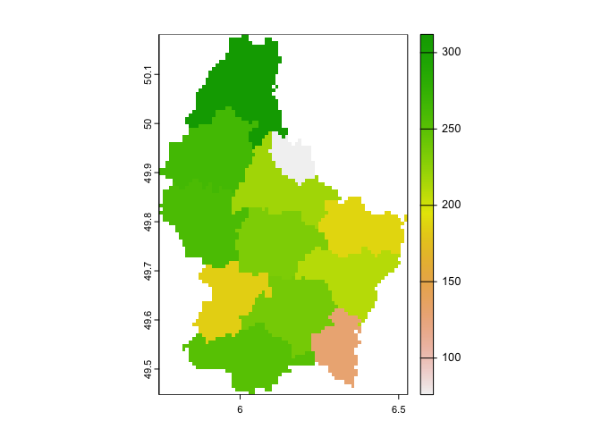
Under the hood, “Reds” refers to one of the color schemes supported by the RColorBrewer package (see below).
In addition to the built-in palettes, customized color ranges can be created by specifying a vector with the desired colors as anchors. This will create a spectrum of colors in the map that range between the colors specified in the vector. For instance, if we used c(“red”, “blue”), the color spectrum would move from red to purple, then to blue, with in between shades. In our example:
tm_shape(saccitytracts) +
tm_polygons(col = "pwh", style = "quantile",palette = c("red","blue")) 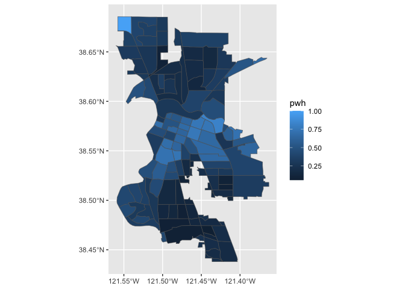
Not exactly a pretty picture. In order to capture a diverging scale, we insert “white” in between red and blue.
tm_shape(saccitytracts) +
tm_polygons(col = "pwh", style = "quantile",palette = c("red","white", "blue")) 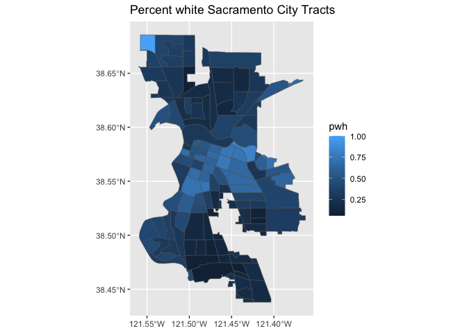
A preferred approach to select a color palette is to chose one of the schemes contained in the RColorBrewer package. These are based on the research of cartographer Cynthia Brewer (see the colorbrewer2 web site for details). ColorBrewer makes a distinction between sequential scales (for a scale that goes from low to high), diverging scales (to highlight how values differ from a central tendency), and qualitative scales (for categorical variables). For each scale, a series of single hue and multi-hue scales are suggested. In the RColorBrewer package, these are referred to by a name (e.g., the “Reds” palette we used above is an example). The full list is contained in the RColorBrewer documentation.
There are two very useful commands in this package. One sets a color palette by specifying its name and the number of desired categories. The result is a character vector with the hex codes of the corresponding colors.
For example, we select a sequential color scheme going from blue to green, as BuGn, by means of the command brewer.pal, with the number of categories (6) and the scheme as arguments. The resulting vector contains the HEX codes for the colors.
brewer.pal(6,"BuGn")## [1] "#EDF8FB" "#CCECE6" "#99D8C9" "#66C2A4" "#2CA25F" "#006D2C"Using this palette in our map yields the following result.
tm_shape(saccitytracts) +
tm_polygons(col = "pwh", style = "quantile",palette="BuGn") 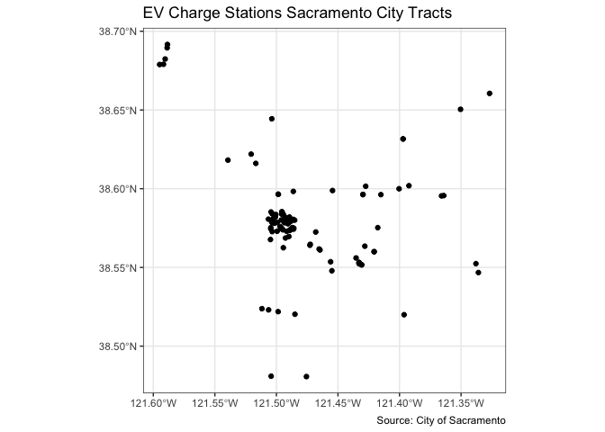
The command display.brewer.pal() allows us to explore different color schemes before applying them to a map. For example:
display.brewer.pal(6,"BuGn")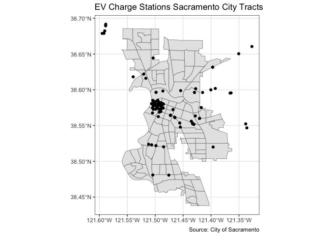
Legend
There are many options to change the formatting of the legend. The automatic title for the legend is not that attractive, since it is simply the variable name. This can be customized by setting the title argument.
tm_shape(saccitytracts) +
tm_polygons(col = "pwh", style = "quantile",palette = "Reds",
title = "Percent white") 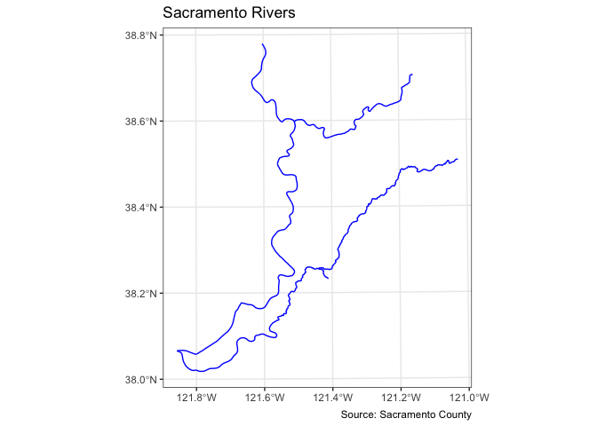
Another important aspect of the legend is its positioning. This is handled through the tm_layout() function. This function has a vast number of options, as detailed in the documentation. There are also specialized subsets of layout functions, focused on specific aspects of the map, such as tm_legend(), tm_style() and tm_format(). We illustrate the positioning of the legend.
The default is to position the legend inside the map. Often, this default solution is appropriate, but sometimes further control is needed. The legend.position argument to the tm_layout function moves the legend around the map, and it takes a vector of two string variables that determine both the horizontal position (“left”, “right”, or “center”) and the vertical position (“top”, “bottom”, or “center”).
For example, if we would want to move the legend to the upper-right position, we would use the following set of commands.
tm_shape(saccitytracts) +
tm_polygons(col = "pwh", style = "quantile",palette = "Reds",
title = "Percent white") +
tm_layout(legend.position = c("right", "top"))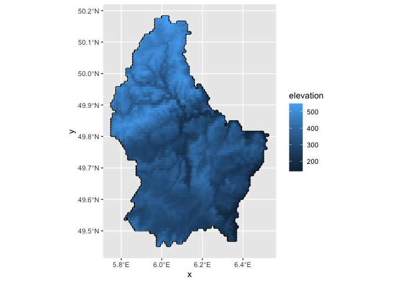
There is also the option to position the legend outside the frame of the map. This is accomplished by setting legend.outside to TRUE (the default is FALSE), and optionally also specify its position by means of legend.outside.position(). The latter can take the values “top”, “bottom”, “right”, and “left”.
For example, to position the legend outside and on the right, would be accomplished by the following commands.
tm_shape(saccitytracts) +
tm_polygons(col = "pwh", style = "quantile",palette = "Reds",
title = "Percent white") +
tm_layout(legend.outside = TRUE, legend.outside.position = "right")
We can also customize the size of the legend, its alignment, font, etc. We refer to the documentation for specifics.
Title
Another functionality of the tm_layout() function is to set a title for the map, and specify its position, size, etc. For example, we can set the title, the title.size and the title.position as in the example below. We made the font size a bit smaller (0.8) in order not to overwhelm the map, and positioned it in the bottom right-hand corner.
tm_shape(saccitytracts) +
tm_polygons(col = "pwh", style = "quantile",palette = "Reds",
title = "Percent white") +
tm_layout(title = "Percent white Sacramento tracts", title.size = 0.8,
title.position = c("right","bottom"),
legend.outside = TRUE, legend.outside.position = "right")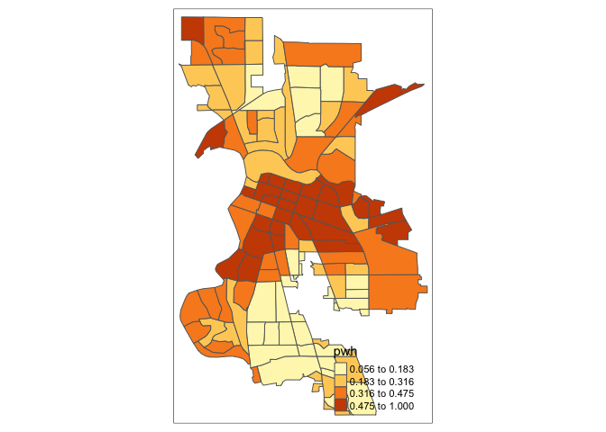
To have a title appear on top (or on the bottom) of the map, we need to set the main.title argument of the tm_layout() function, with the associated main.title.position, as illustrated below (with title.size set to 1.25 to have a larger font).
tm_shape(saccitytracts) +
tm_polygons(col = "pwh", style = "quantile",palette = "Reds",
title = "Percent white") +
tm_layout(main.title = "Percent white Sacramento tracts",
main.title.size = 1.25, main.title.position="center",
legend.outside = TRUE, legend.outside.position = "right")
Other features
We need to add other key elements to the map. First, the scale bar, which you can add using the function tm_scale_bar(). Scale bars provide a visual indication of the size of features, and distance between features, on the map.
tm_shape(saccitytracts, unit = "mi") +
tm_polygons(col = "pwh", style = "quantile",palette = "Reds",
title = "Percent white") +
tm_scale_bar(breaks = c(0, 1, 2), text.size = 1, position = c("left", "bottom")) +
tm_layout(main.title = "Percent white Sacramento tracts",
main.title.size = 1.25, main.title.position="center",
legend.outside = TRUE, legend.outside.position = "right")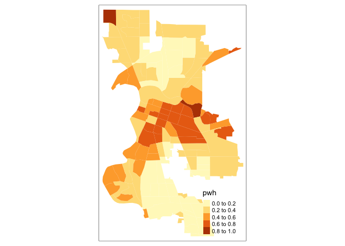
The argument breaks tells R the distances to break up and end the bar. Make sure you use reasonable break points. Sacramento is not, for example, 500 miles wide, so you should not use c(0,10,500) (try it and see what happens. You won’t like it). Note that the scale is in miles (were in America!). The default is in kilometers (the rest of the world!), but you can specify the units within tm_shape() using the argument unit. Here, we used unit = "mi". The position = argument locates the scale bar on the bottom left of the map.
We can also add a north arrow, which we can add using the function tm_compass(). You can control for the type, size and location of the arrow within this function. I place a 4-star arrow on the bottom right of the map.
tm_shape(saccitytracts, unit = "mi") +
tm_polygons(col = "pwh", style = "quantile",palette = "Reds",
title = "Percent white") +
tm_scale_bar(breaks = c(0, 1, 2), text.size = 1, position = c("left", "bottom")) +
tm_compass(type = "4star", position = c("right", "bottom")) +
tm_layout(main.title = "Percent white Sacramento tracts",
main.title.size = 1.25, main.title.position="center",
legend.outside = TRUE, legend.outside.position = "right")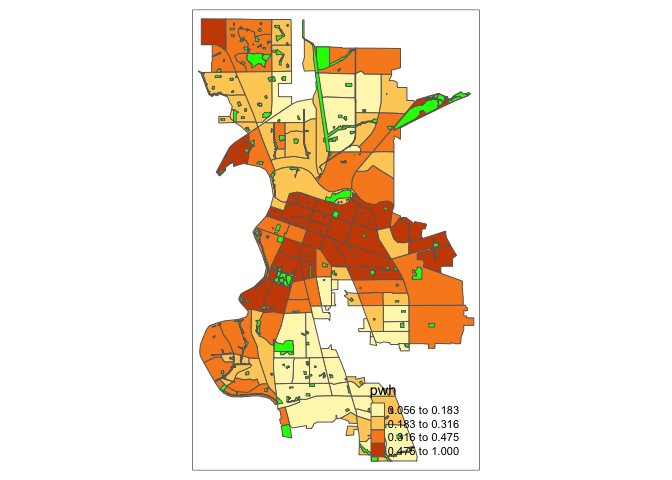
We can also eliminate the frame around the map using the argument frame = FALSE.
tm_shape(saccitytracts, unit = "mi") +
tm_polygons(col = "pwh", style = "quantile",palette = "Reds",
title = "Percent white") +
tm_scale_bar(breaks = c(0, 1, 2), text.size = 1, position = c("left", "bottom")) +
tm_compass(type = "4star", position = c("right", "bottom")) +
tm_layout(main.title = "Percent white Sacramento tracts",
main.title.size = 1.25, main.title.position="center",
legend.outside = TRUE, legend.outside.position = "right",
frame = FALSE)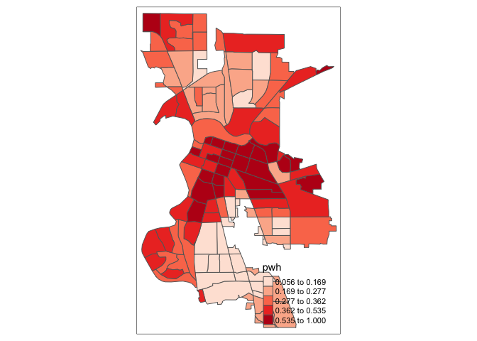
So far we’ve created static maps. That is, maps that don’t “move”. But, we’re all likely used to Google or Bing maps - maps that we can move around and zoom into. You can make interactive maps in R using the package tmap. Here is another benefit of using tmap over ggplot - the latter does not provide interactivity.
To make your tmap object interactive, use the function tmap_mode() and specify “view”.
tmap_mode("view")Now that the interactive mode has been ‘turned on’, all maps produced with tm_shape() will launch.
tm_shape(saccitytracts) +
tm_polygons(col = "pwh", style = "quantile",palette = "Reds",
border.alpha = 0, title = "Percent white")Zoom in and out to find out where percent white is high and low. To switch back to plotting mode (static), type in
tmap_mode("plot")## tmap mode set to plottingBehind the scenes, the package leaflet is used for generating the interactive map
Dot map
We can create a dot or pin map using tm_dots()
tm_shape(saccitytracts) +
tm_borders() +
tm_shape(evcharge) +
tm_dots(col = "red", title="Environmental Exposure Type") +
tm_layout(main.title = "EV Charge Stations Sacramento",
main.title.size = 1, main.title.position="center")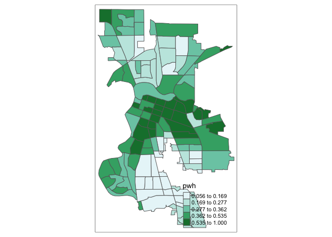
Overlay it on top of polygons shaded by percent white.
tm_shape(saccitytracts, unit = "mi") +
tm_polygons(col = "pwh", style = "quantile",palette = "Reds",
title = "Percent white") +
tm_shape(evcharge) +
tm_dots(col = "black") +
tm_scale_bar(breaks = c(0, 1, 2), text.size = 1, position = c("left", "bottom")) +
tm_compass(type = "4star", position = c("right", "bottom")) +
tm_layout(main.title = "EV Charge Stations Sacramento",
main.title.size = 1.25, main.title.position="center",
legend.outside = TRUE, legend.outside.position = "right",
frame = FALSE)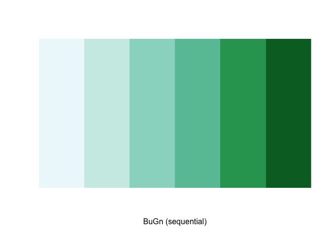
Color patch map
OSU page 72 discusses color patch maps, which is a map of polygons based on a categorical variable. To do this, use style = "cat". Let’s map the categorical variable medinc, which has categories “High”, “Medium” and “Low”.
tm_shape(saccitytracts) +
tm_polygons("medinc",style="cat",palette="Paired") +
tm_layout(main.title = "Median Income Sacramento",
main.title.size = 1, main.title.position="left",
legend.outside = TRUE, legend.outside.position = "right")Cartogram
In R, a useful implementation of different types of cartograms is included in the package cartogram. Specifically, this supports the area cartograms described in OSU page 78 using cartogram_cont(). The result of these functions is a simple features layer, which can then be mapped by means of the usual tmap commands.
For example, we take the pwh variable to construct an area cartogram. First, we need to add a projection to saccitytracts. We do this by using st_transform(), and we use the UTM projection.
saccitytracts <-st_transform(saccitytracts,
crs = "+proj=utm +zone=10 +datum=NAD83 +ellps=GRS80") Next, we pass the layer (saccitytracts) and the variable to the cartogram_cont function. We check that the result is an sf object.
carto.cont <- cartogram_cont(saccitytracts,"pwh")
class(carto.cont)Which we can map
tm_shape(carto.cont) +
tm_fill("pwh") +
tm_borders()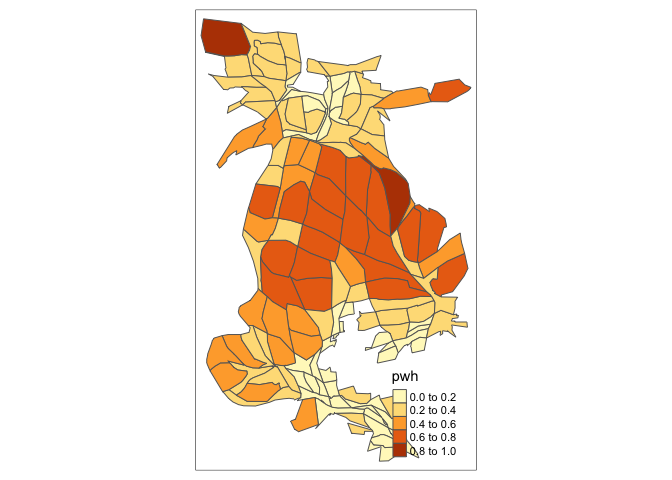
Writing spatial data
Earlier you learned how to read in spatial data. We end today’s lab by learning how to write spatial data. The function is st_write().
Let’s save the Sacramento tract sf object saccitytracts as a shapefile .shp.
st_write(saccitytracts, "Sacramento_Tract_pwhite.shp", delete_layer = TRUE)The delete_layer = TRUE argument tells R to overwrite the file Sacramento_Tract_pwhite.shp if it already exists in your current directory. You should see the files associated with Sacramento_Tract_pwhite in your current working directory.
You’ve completed your introduction to sf. Whew! Badge? Yes, please, you earned it! Time to celebrate!

Answer the assignment 4 questions that are uploaded on Canvas. Submit an R Markdown and its knitted document on Canvas by the assignment due date.
Resources
This is not a Geographic Information Science class, so we did not touch on the many tools that sf offers for manipulating and managing your spatial data. The best references for sf and, more broadly, cleaning, managing and analyzing spatial data in R are Geocomputation with R (GWR) and Spatial Data Science (SDS). The SDS book is not complete, but what is there is really good (albeit a bit more complex in terms of the coding). Both are freely available through the links provided.
For more on using ggplot() to map, check out this and this. Some of this lab guide is adapted from Robert Hijman’s rspatial website. Check out his guide for more information on the sp package.

This work is licensed under a Creative Commons Attribution-NonCommercial 4.0 International License.
Website created and maintained by Noli Brazil